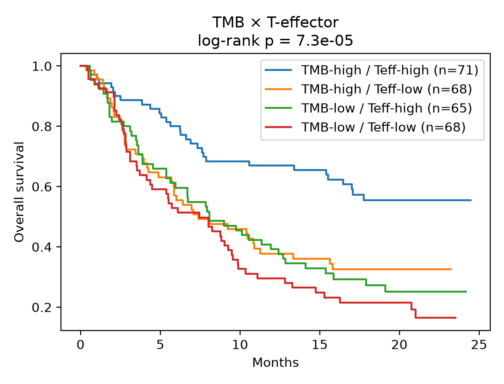
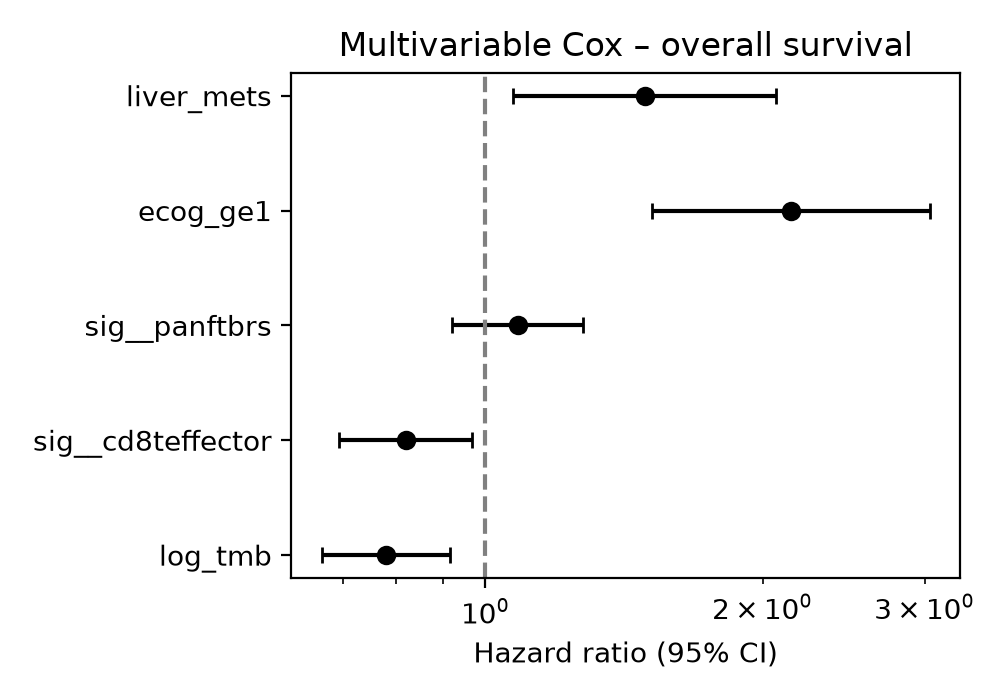
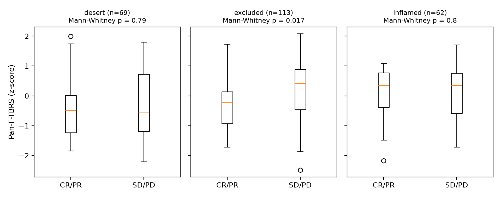
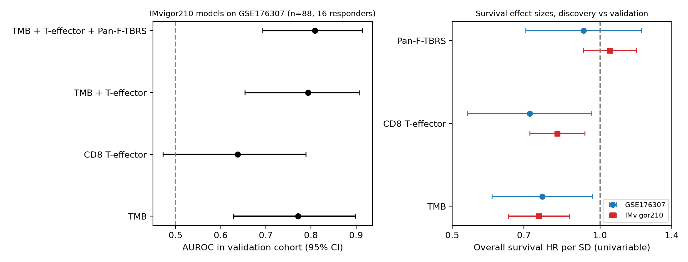

Research / Cancer genomics
Immunotherapy Response Biomarkers in Urothelial Cancer
Code and full results on GitHubSummary
In the IMvigor210 trial of atezolizumab in metastatic urothelial cancer, 23% of evaluable patients responded to treatment. The original study linked response to tumor mutational burden (TMB), CD8 T-cell activity and a fibroblast TGF-beta signature (pan-F-TBRS). This project reanalyzes the trial with stricter model comparisons, then tests the markers and the trained model in an independent real-world cohort from a different institution.
Key result. The model trained on IMvigor210 reached AUROC 0.81 in the independent cohort without refitting, and the TMB survival effect replicated almost exactly (HR 0.76 vs 0.75 per SD).
Data
| Cohort | Patients | Data | Use |
|---|---|---|---|
| IMvigor210 (Mariathasan et al., Nature 2018) | 348; 298 evaluable for response, 68 responders | RNA-seq, FoundationOne TMB, response, survival, immune phenotype | Discovery |
| GSE176307 (Rose et al., Br J Cancer 2021) | 90; 16 responders | RNA-seq, panel TMB, response, survival | External validation |
The IMvigor210 data package can no longer be installed because a required Bioconductor dependency was retired, so the export reads the saved data objects directly.
Approach
- Survival: Kaplan-Meier with log-rank tests; univariable and multivariable Cox models with a proportional-hazards check.
- Response: logistic regression with 5-fold by 20-repeat cross-validation. All feature sets are compared on the same patients with identical splits, and gains over TMB carry bootstrap 95% CIs.
- TGF-beta and immune exclusion: pan-F-TBRS tested within each immune phenotype and with a TBRS by excluded interaction model.
- External validation: signatures scored identically, and IMvigor210-trained models applied to the new cohort with no refitting.
Results
1. TMB and CD8 T-effector independently predict survival
| Multivariable Cox, HR per SD (n = 246) | HR (95% CI) | p |
|---|---|---|
| TMB | 0.78 (0.66 to 0.92) | 0.002 |
| CD8 T-effector | 0.82 (0.69 to 0.97) | 0.019 |
| Pan-F-TBRS | 1.08 (0.92 to 1.28) | 0.34 |
| ECOG 1 or higher | 2.15 (1.52 to 3.04) | 2e-5 |
| Liver metastases | 1.49 (1.07 to 2.07) | 0.017 |


2. Adding T-effector to TMB does not improve response prediction
All feature sets were compared on the same 210 patients (47 responders) with identical CV splits:
| Feature set | AUROC | Gain over TMB (95% CI) |
|---|---|---|
| TMB | 0.74 | |
| CD8 T-effector | 0.59 | -0.16 (-0.28 to -0.04) |
| TMB + T-effector | 0.74 | +0.002 (-0.02 to +0.03) |
| TMB + signatures + clinical | 0.77 | +0.04 (-0.02 to +0.10) |
3. Pan-F-TBRS marks non-response in immune-excluded tumors
Within excluded tumors, higher pan-F-TBRS lowered the odds of response (OR 0.58 per SD, p = 0.028), with no effect in desert or inflamed tumors. This reproduces the direction reported in the original study; the formal interaction test was a trend (p = 0.077).

4. External validation
| Measure | IMvigor210 | Independent cohort |
|---|---|---|
| TMB, response AUROC | 0.74 | 0.77 (0.62 to 0.90) |
| Trained model (TMB + T-effector + pan-F-TBRS), AUROC | 0.77 | 0.81 (0.69 to 0.91), no refitting |
| TMB, survival HR per SD | 0.75 | 0.76 (p = 0.025) |
| CD8 T-effector, survival HR per SD | 0.82 | 0.72 (p = 0.026) |

Takeaways
- TMB is the most robust single marker here: it replicates across cohorts and TMB assays.
- Fair comparisons (same patients, same splits) change conclusions: T-effector adds little on top of TMB.
- A model trained on a clinical trial transfers to real-world patients without refitting.
Limitations: the validation cohort is small (16 responders) and has no pathology-based immune phenotype, so the TGF-beta finding is not externally validated.